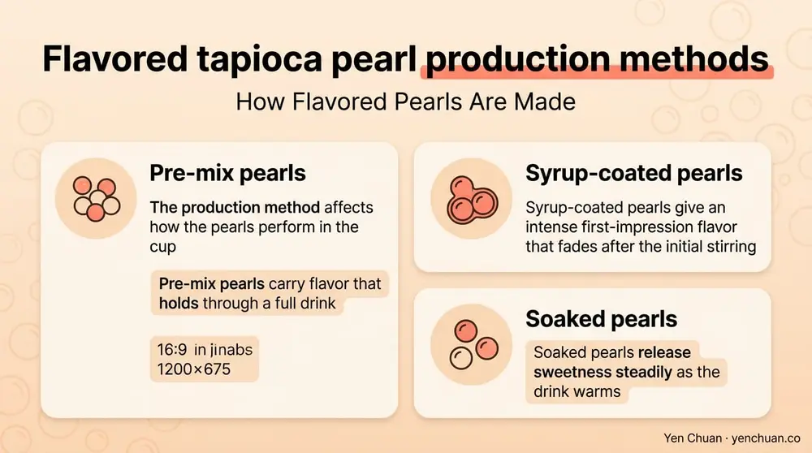
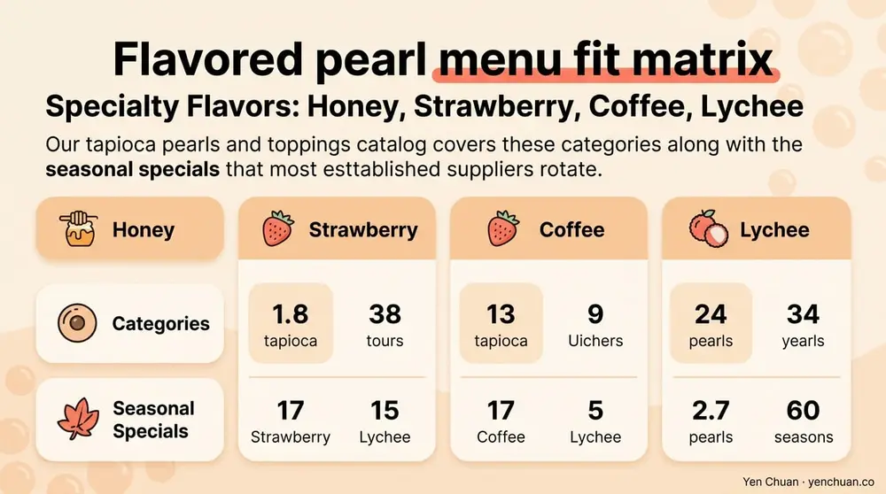

文章 / 經營與採購
Flavored Tapioca Pearls: Wholesale Supplier Guide
這篇是英文原文，尚未完成繁體中文翻譯。中文選單與相關商品連結不會切回英文介面。

查看英文原文（尚未翻譯）
Plain black tapioca pearls used to do most of the work in a bubble tea menu. Not anymore. Flavored tapioca pearls — brown sugar, matcha, taro, honey, and dozens of regional variations — have become a growth category in their own right, driving both menu differentiation and premium pricing. A 2024 QSR Magazine feature on Asian beverage trends in North America noted that chains offering three or more flavored-pearl options saw 18% higher average ticket sizes versus those offering only classic pearls. For operators working with a tapioca pearls wholesale supplier, picking the right flavor lineup — and understanding how each variant actually behaves in production — is where real menu strategy lives.
How Flavored Pearls Are Made
Flavored pearls start from the same base as classic black or white pearls: tapioca starch from cassava, water, and a binding component (often sugar syrup). Flavor and color are introduced during mixing, before the pearls are shaped, cooked, and dried or pre-syruped.
Three methods dominate in factories. Inclusion pre-mix involves blending flavor powders or concentrates directly into the starch dough before shaping, which gives the most uniform distribution but requires heat-stable flavor systems. Syrup-coating happens after the pearls are cooked and cooled, letting flavor and color sit on the outer layer — this works well for delicate flavors that would break down during extrusion. Infusion soaking submerges finished pearls in a flavored syrup for 12-48 hours, most common for brown sugar pearls where deep caramelization is the product.
The production method affects how the pearls perform in the cup. Pre-mix pearls carry flavor that holds through a full drink. Syrup-coated pearls give an intense first-impression flavor that fades after the initial stirring. Soaked pearls release sweetness steadily as the drink warms.

Brown Sugar Pearls: The Category Killer
Brown sugar (hei tang) pearls became the defining product of the 2018-2020 boba wave and have stayed on menus since because they command a price premium customers happily pay. Real brown-sugar pearls are soaked in dark muscovado or Okinawa black sugar syrup for 24+ hours, developing the molasses-forward caramel notes that built the category. Lower-tier versions substitute caramel color and synthetic caramel flavor, which reads thin on the palate and stains pearl texture.
Quality checkpoints when buying brown sugar pearls: ingredient label should list cane sugar or brown sugar as the primary flavoring, not "caramel color" or "natural flavor." Visual inspection should show even, deep amber color through the pearl — not just a coated surface. Pearls should remain chewy after 30 minutes in ice without dissolving into sludge.
For operators rounding out a brown-sugar-forward menu, pairing brown sugar pearls with matching drink components — like brown sugar syrup for dirty brown sugar milk or Okinawa brown sugar milk tea powder for an iced base — keeps the flavor profile coherent across the cup.
Matcha Pearls: Where Color and Flavor Diverge
Matcha pearls are trickier than they look. Culinary-grade matcha powder blends easily into the starch dough, but it oxidizes quickly, leaving pearls that look brown-green within weeks of production. Ceremonial-grade matcha holds its color longer but is cost-prohibitive at the volumes industrial pearl lines require.
Most commercial matcha pearls use a stabilized matcha concentrate or a matcha-spirulina blend to lock in color. The best ones still read grassy and slightly bitter on the palate — genuine matcha character — without the dusty aftertaste of low-quality green tea powder. Ask suppliers for chlorophyll retention data after 6-month storage at 25°C; reputable factories will share it.
These pearls pair naturally with matcha-forward drinks built on bases like Uji flavored matcha milk tea or matcha syrup, letting the pearl reinforce rather than fight the drink.
Taro Pearls: The Purple Question
Taro (yam) pearls bring a distinctive purple color and mild nutty sweetness that customers strongly associate with taro milk tea — even when the base drink uses taro powder rather than real taro root. The authenticity challenge is that actual taro is bland and grey-white; the vibrant purple and sweet flavor most people expect comes from added ingredients.
Quality-tier taro pearls use real taro puree blended with small amounts of purple sweet potato for color stability and natural vanilla for sweetness depth. Budget versions rely on synthetic vanillin and Red 40 + Blue 1 blends, which is why some US states and all EU markets require front-of-pack warnings on those products. The Center for Science in the Public Interest (CSPI) has repeatedly flagged synthetic food dyes as an area where natural alternatives are underused despite being commercially viable.
Specialty Flavors: Honey, Strawberry, Coffee, Lychee
Beyond the big three, the next tier of flavored pearls serves specific menu positions. Honey pearls play well in honey oolong or yuzu-honey drinks and carry a light floral note that doesn't clash with delicate tea bases. Strawberry and mango pearls are summer seasonal drivers, typically offered as limited editions. Coffee pearls suit dirty latte formats where the pearl reinforces the coffee profile. Lychee and rose pearls are gaining ground in premium tea lounges and matcha cafés.
Our tapioca pearls and toppings catalog covers these categories along with the seasonal specials that most established suppliers rotate.

Menu Fit and Inventory Strategy
Not every flavored pearl belongs on every menu. A practical way to plan the lineup is to map each variant against your three to five signature drinks and ask whether the pearl actively lifts the drink. Brown sugar pearls lift any milk-based drink. Matcha pearls lift matcha and green-tea drinks but fight fruit teas. Taro pearls own taro-family drinks but look odd in citrus.
On inventory, flavored pearls typically carry higher unit cost (10-35% more than classic black pearls) and slightly shorter shelf life once opened. Operators with high-velocity menus absorb this easily. Lower-volume shops should pair flavored pearls with a limited-time-offer strategy rather than keep five SKUs on standby.
| Flavor | Best-Fit Drinks | Cost Premium vs Classic | Typical Shelf Life Sealed |
|---|---|---|---|
| Brown sugar | Dirty brown sugar milk, milk tea | +25-35% | 12 months |
| Matcha | Matcha latte, green tea | +15-25% | 9-12 months |
| Taro | Taro milk tea, purple yam drinks | +15-20% | 12 months |
| Honey | Honey oolong, yuzu tea | +10-15% | 12 months |
| Coffee | Dirty latte, coffee milk tea | +15-20% | 9-12 months |
For broader sourcing context across the tapioca category, our article on black vs white tapioca pearls: manufacturing differences and sourcing tips covers the base technology flavored pearls are built on, and how to vet a milk tea supplier walks through the broader procurement checklist.
MOQs, Lead Times, and Custom Runs
Flavored pearls from established Taiwanese manufacturers typically ship in 5-10 kg vacuum-sealed pouches for operator convenience. Minimum order quantities for stock flavors generally start at one carton (10-20 kg) for direct-from-factory pricing; wholesalers and distributors offer smaller quantities at a markup. Custom flavor development — a co-branded signature pearl for a chain — typically requires 500-1,000 kg MOQ with 10-14 weeks of R&D.
Lead times from Taiwan to major ports sit at 3-4 weeks for sea freight, with an additional 1-2 weeks for inland distribution. Smart operators batch-order across multiple SKUs to share container space and amortize logistics costs.
About Yen Chuan
Yen Chuan has been at the heart of Taiwan's bubble tea industry for over 20 years, supplying premium powders, syrups, tapioca pearls, and tea leaves to thousands of boba shops worldwide. With an in-house R&D lab and a commitment to quality ingredients, Yen Chuan is more than a supplier — we're your partner in the boba business. Our flavored pearl lineup covers brown sugar, matcha, taro, and custom runs for chains looking to differentiate — and we share the technical data that matters, from color retention to sugar-load specs.
Ready to Build a Flavored Pearl Lineup?
Looking for a tapioca pearls wholesale supplier with real flavor depth? Browse our pearl catalog or reach out to our team for samples and pricing — we ship worldwide from Taiwan with full technical data sheets on every SKU.
Authority Citations
- QSR Magazine — Asian Beverage Trends 2024, qsrmagazine.com
- Center for Science in the Public Interest — Food Dyes Report, cspinet.org
- Grand View Research — Bubble Tea Market Report, grandviewresearch.com
- Food and Agriculture Organization (FAO) — Cassava Utilization Data, fao.org
- Mordor Intelligence — Bubble Tea Industry Analysis, mordorintelligence.com
Frequently Asked Questions
Q: What are flavored tapioca pearls made of? A: Flavored tapioca pearls use the same cassava-starch base as classic pearls, with added flavor and color introduced during mixing, syrup-coating, or post-cooking infusion. Brown sugar pearls are typically soaked in real muscovado or black sugar syrup, while matcha and taro versions incorporate tea or root ingredients during the starch mix phase.
Q: How much more do flavored pearls cost versus classic black pearls? A: Brown sugar pearls carry the largest premium at 25-35% above classic black, followed by matcha and taro at 15-25%. Coffee, honey, and seasonal fruit pearls generally sit 10-20% above classic. Pricing varies by manufacturer, MOQ, and whether the product uses natural or synthetic colorants.
Q: Do flavored pearls need to be cooked differently from classic pearls? A: Most flavored pearls follow the same cook-soak-hold cycle as classic pearls, though brown sugar varieties are often sold pre-syruped and need only a short reheat. Matcha pearls are color-sensitive to overcooking — follow the supplier's technical data sheet precisely, and taste-test each new batch.
Q: Are the colors in flavored pearls natural or synthetic? A: It depends on the manufacturer. Premium Taiwanese suppliers increasingly use natural colorants like anthocyanins, spirulina, and real matcha or taro, while budget options rely on synthetic dyes such as Red 40 and Blue 1. Always request the ingredient statement and confirm compliance with your target market's labeling rules.
Q: What's the minimum order for custom flavored pearls? A: Custom flavor development for a chain typically requires 500-1,000 kg MOQ with 10-14 weeks of R&D before first production. Stock flavors usually ship in 5-10 kg pouches with carton-level MOQs (10-20 kg) direct from the factory.